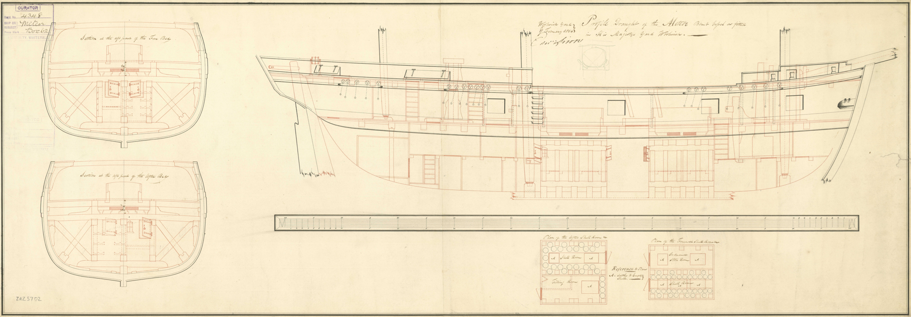
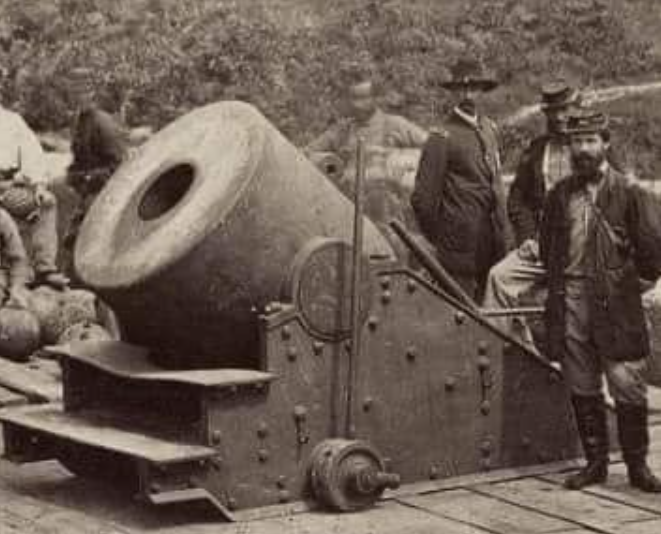
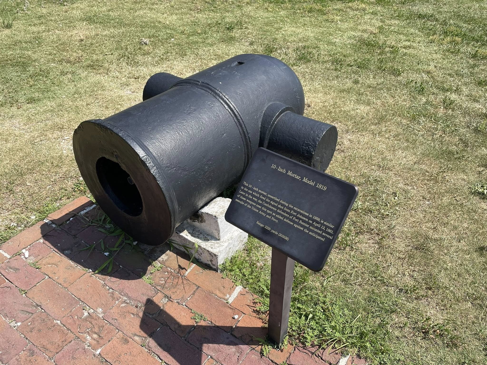
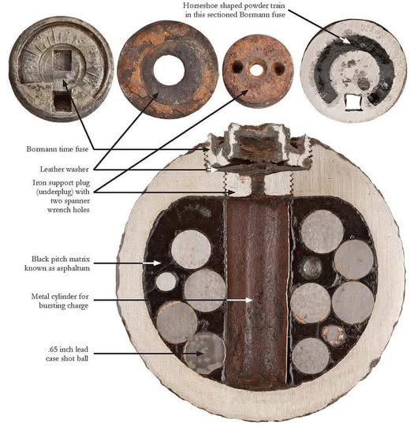
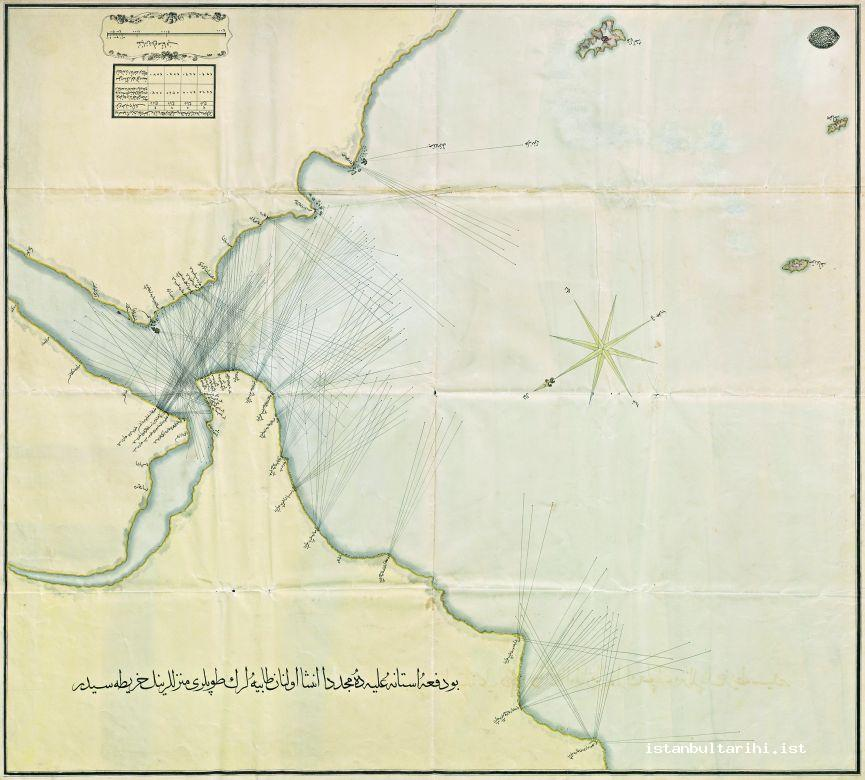
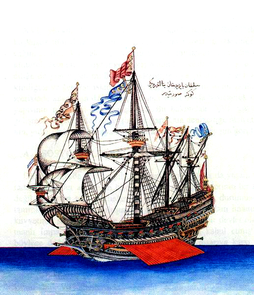
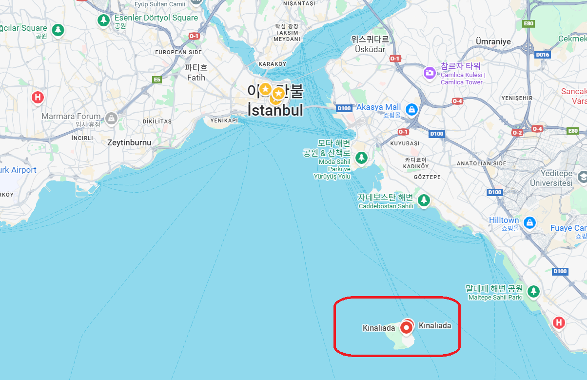
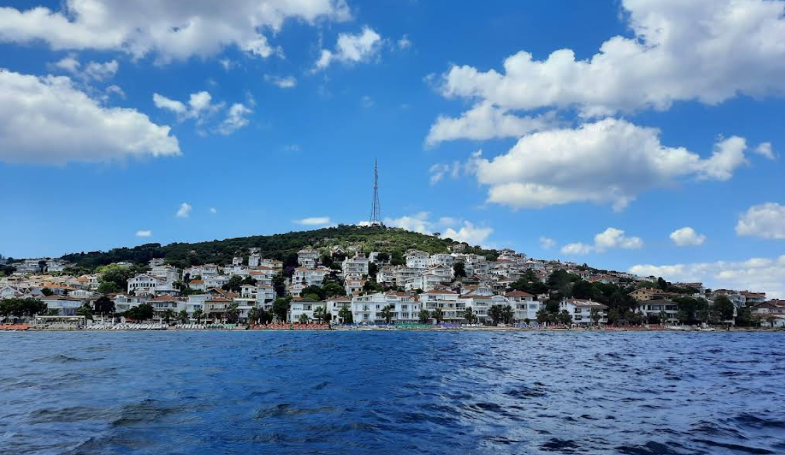

이스탄불 여행 (10) - 자신감 결여
게시: 2026-01-15T06:30:22+09:00
덕워쓰 제독의 함대에는 2척의 박격포함(bomb vessel) HMS Meteor와 HMS Lucifer이 포함되어 있었습니다. 특히 HMS Meteor는 13인치 박격포와 10인치 박격포를 탑재한 박격포함으로서, 1804년 프랑스의 군항인 르 아브르(Le Havre), 그리고 영국 침공 준비가 한창이던 불로뉴(Boulogne)에 폭발탄 수백 발을 발사하여 항구에 화재를 일으키는데 이미 큰 효과를 본 바 있었습니다. 그런데 고작 2척을 보낸 것은 확실히 이스탄불을 너무 얕본 것이었습니다. 2척에 장착된 3~4문의 박격포로는, 수병들이 하루종일 쉬지 않고 쏘아댄다고 하더라도 하루에 고작 수백 발의 폭발탄만을 투하할 수 있었습니다. 무엇보다, 박격포함은 보통 작은 선박이었고 미티어 호의 배수량도 360톤에 불과했으므로, 그 선창에 보관할 수 있는 포탄도 13인치 폭발탄 100발, 10인치 폭발탄 150발 정도가 한계였습니다. 동행한 함대 내의 전열함들에는 13인치 폭발탄 따위는 보관하고 있지 않았으므로 따로 보급선을 동반하지 않는 이상 폭발탄을 보충받을 길도 없었습니다. 게다가, 가장 큰 13인치 폭발탄이라고 해도 그 속에는 폭발력이 약한 흑색화약이 4~5kg 정도 채워진 것에 불과했으므로, 그 폭발이 도시에 큰 피해를 주기도 어려웠습니다. 그러니까, 그렇게 위력이 약한 폭발탄을 총 500발 정도 던져 넣는다고 이스탄불이 겁을 먹고 굴북할 것 같지는 않았습니다.

(박격포함 HMS Meteor는 원래 Sarah Ann이라는 이름의 서인도제도 무역선이었습니다. 1800년 진수된 이 무역선은 1803년 영국 해군성이 사들여 박격포함으로 개조하고 HMS Meteor라는 이름으로 개명했습니다. 이 그림은 그 개조에 사용된 설계도입니다. 커다란 박격포 2문을 장착하기 위해 X자형 버팀목을 덧대는 등 기골을 대폭 보강한 것을 보실 수 있습니다. 우측 최상단 원문: Profile Inboard of the Meteor Bomb Vessel as fitted at Woolwich for Service (해군 취역을 위해 울위치(Woolwich) 조선소에서 개조된 박격포함 미티어호의 내부 측면도) 좌측 상단 원문: Section at the after part of the Fire Room (박격포실 뒷부분의 단면도) 좌측 하단 원문: Section at the fore part of the After Shell Room (후방 폭발탄 저장고 앞부분의 단면도) 하단 평면도 원문: Plan of the After Shell Room / Plan of the Fore Shell Room (후방 폭발탄 저장고 평면도 / 전방 폭발탄 저장고 평면도)) 그런데 엎친 데 덮친 격으로, 그나마 가장 큰 미티어 호의 13인치 박격포에 탈이 나버렸습니다. 2월 19일, 다다넬즈 해협을 통과하면서 해안 포대와 포격을 주고 받았던 것을 기억하실 텐데, 그때 미티어도 해안 포대를 향해 열심히 박격포를 쏘아댔습니다. 그런데, 몇 년 전 르 아브르 및 불로뉴 폭격 때 너무 많은 포격을 했었는지 이때 그만 13인치 박격포의 포신에 파열(burst)이 발생한 것입니다. 이로써 이스탄불을 폭격할 가장 강력한 화기가 사라져버린 것입니다. 그에 그치지 않았습니다. 곧 이어 벌어진 이스탄불 근처의 오스만 투르크 군함들 및 해안 포대와의 교전에서, 미티어에 그나마 하나 남은 10인치 박격포도 파열을 일으키고 말았습니다. 박격포함 2척 중에 가장 듬직했던 미티어는 이로써 완전히 전력에서 이탈한 셈이 되었습니다.

(13인치 박격포입니다. 이건 영국 해군에서 사용하던 것이 아니라 미국의 해안 요새에 배치된 것인데, 아마 군함에 탑재하는 박격포는 포신이 저렇게 두껍지는 않았을 것입니다. 저렇게 두꺼운 포신이 갈라진다? 상상하기 어렵습니다. 아무튼 이 무게 7.6톤짜리 해안 배치 박격포는 90kg짜리 폭발탄을 최대 4km까지 날릴 수 있었습니다. 박격포는 일반 대포(cannon)처럼 쇳덩어리 포탄(roundshot)을 직사로 쏘기 보다는 주로 속에 흑색화약을 채우고 별도의 도화선이 달린 폭발탄(bomb, shell)을 큰 포물선을 그리면서 적의 요새 안으로 투하하는데 사용되었는데, 구경이 크면 클 수록 더 정확한 투하가 가능했습니다.)

(이건 미국 섬터(Sumter) 요새에 설치된 10인치 박격포입니다.)

(미국 남북전쟁 당시 사용된 Bormann 폭발탄입니다. 저렇게 별도로 도화선이 달린 신관이 달려 있고, 속에는 산탄용 쇠구슬과 아스팔트가 채워져 있습니다.) 이런 상태로 이스탄불 앞바다에 닻을 내린 덕워쓰 제독은 막막했습니다. 미티어 호의 박격포 2문이 다 살아 있다고 해도 이스탄불을 불바다로 만드는 것은 어려운 일이었는데, 이제 미티어까지 없는 상황에서 루시퍼 호의 박격포와 나머지 전열함의 대포만으로는 이스탄불 시내에 별다른 피해를 주기는 어려웠습니다. 실은 박격포함이 몇 척이 있건 간에, 함대가 항구 도시를 공격할 때 주로 사용한 방법은 지상 병력을 상륙시키는 것이었습니다. 당시 영국 함대가 가진 최고의 병기는 대포가 아니라 머스켓과 커틀라스(cutlass, 수병용 군도)로 무장하고 적함에 뛰어드는 수병들이었기 때문입니다. 지난 편에 설명했듯이, 이스탄불 시민들이 가장 두려워하는 것도 바로 그것이었습니다. 덕워쓰 휘하 7척의 전열함은 각각 정원이 600~800명 정도 되었으므로, 무장 수병들과 해병들을 2천 명 정도 상륙시킬 수 있었습니다. 이건 1개 여단의 병력에 해당하는 것으로서, 결코 적은 병력이 아니었습니다. 하지만 역시, 작은 군항을 상대로라면 몰라도 인구 50만이 넘고 술탄의 친위대가 지키고 있는데다 천년 넘게 도시를 지키고 있는 견고한 성벽으로 둘러싸인 대도시 이스탄불을 상대로 2천 명은 턱도 없이 부족한 숫자였습니다. 그렇게 어쩔 줄을 모르고 고심하던 덕워쓰에게 도착 다음 날인 2월 21일 날아든 한 줄기 희망의 빛은 이스탄불에서 백기를 든 사절단이 찾아와 협상을 벌이려 했다는 점이었습니다. 덕워쓰는 내심 반가운 것을 감추고 근엄한 표정으로 이들을 대했지만, 지난 편에서 설명했듯이 이들은 세바스티아니의 코칭을 받고 보내진 사절로서, 그들의 목적은 영국과의 협상이 아니라 그저 시간 끄는 것 뿐이었습니다. 이렇게 사절단이 덕워쓰를 상대하는 사이, 세바스티아니와 그의 프랑스 엔지니어들, 그리고 오스만 투르크의 관료들은 분주하게 움직였습니다. 지난 번에 설명드린 대로, 영국 수병들이 곧 상륙하여 약탈과 강간을 일삼을 것이라는 소문에 기독교인 주민들까지 우르르 해안으로 쏟아져나와 오스만 투르크 병사들의 진지 공사를 도왔습니다. 이렇게 이스탄불 전체가 총동원되다시피 하여 공사를 한 결과, 불과 4~5일 만인 2월 25일, 이스탄불과 그 일대의 해변은 포대로 가득 뒤덮이게 되었습니다.

(1807년 이스탄불과 그 일대 해변에 설치된 포대와 그 사거리를 표시한 그림입니다. 현대적 지도와 비교를 해보니 사거리를 뜻하는 저 가는 실선들의 길이는 대략 800~900m 정도 되는 것 같습니다. 저 정도면 영국 함대에 박격포함이 더 많았다고 해도 폭격 위치까지 접근할 수 없었을 것입니다.) 한편, 사절단을 상대하던 덕워쓰도 매일 해변에 방어진지 공사가 진행되는 모습을 보고 있었습니다. 그러나 딱히 할 수 있는 것이 없었습니다. 방어 준비를 하지 말라고 요구하는 것은 어차피 씨도 먹히지 않을 일이었고, 공사를 방해하기 위해 해안으로 접근하여 포격을 하자니 보스포러스의 거센 물살과 바람 방향이 영국 함대에게 유리하지가 않았습니다. 무엇보다, 당장 포격을 시작할 경우 과연 승리할 수 있을지 자신감도 없었습니다. 금각만 안에는 12척의 오스만 투르크 전열함들이 대기하고 있었고, 그 외에도 대포를 장착한 대형 보트들, 즉 포함들도 수십 척 대기하고 있는 것이 보였기 때문이었습니다. 영국 해군이 무적인 것은 숙련된 수병들을 이용하여 넓은 대양에서 기동전을 펼칠 때 이야기일 뿐, 이렇게 좁은 해협 안에 갇혀서 해변의 포대 및 해상의 포함들에게 둘러싸일 경우 승패를 알 수 없었습니다.

(오스만 투르크의 해군도 나름 전통이 있는 강군이었고 현대적 무장을 갖추고 있었습니다. 이 그림은 1495년 오스만 투르크의 레이스(Kemal Reis) 제독의 기함이었던 괴케(Göke) 호입니다. 돛 뿐만 아니라 노를 사용하기도 했던 갈레온(Galleon) 선으로서, 정원은 약 700명이었다니까 아마 배수량은 1천 톤 가까이 되었던 것 같습니다. 이 전함은 1499년 벌어진 존키오(Zonchio) 해전에서 베네치아 해군에게 불태워졌습니다만, 그래도 그 해전의 승자는 오스만 투르크였습니다.) 그렇게 공사 진행을 지켜보며 안절부절 고민하는 사이, 불과 4~5일 만에 해변에 총 361개소의 포대가 만들어지고 거기에 총 540문의 대포와 110문이 박격포가 설치되었습니다. 이걸 본 덕워쓰는 기가 질려버렸습니다. 자신이 사절단의 시간 지연 전술에 속았다는 것을 꺠달은 그는 협상을 중단해버렸는데, 그렇다고 뾰족한 수도 없었습니다. 이러는 와중에 일단의 오스만 투르크 병력이 영국 함대가 닻을 내린 해역에서 비교적 가까운 작은 섬 크날르아다(Kınalıada)에 상륙하는 일이 벌어졌습니다. 영국 함대에서도 해병들을 보트에 실어 이 섬에 상륙했고 곧 전투가 벌어졌습니다. 그런데 밀려난 것은 영국 해병대였습니다. 원래 이 섬에는 기독교인 주민들이 살고 있었는데, 이들이 오스만 투르크 편을 들고 지원한 것이 큰 역할을 했기 때문이었습니다. 이 도움에 감격한 오스만 투르크는 나중에 이 섬의 기독교인들에게 마치 무슬림처럼 인두세(jizya, 지즈야)를 면제해주었습니다.

(크날르아다 섬의 위치입니다.)

(지금의 크날르아다 섬의 모습입니다. 저 정도 규모면 확실히 지역 주민들의 협조가 큰 역할을 했을 것입니다.) 이래저래 자신감 상실의 연속이 이어지자, 덕워쓰 제독은 일부 부하 제독의 반대에도 불구하고 철수를 결정했습니다. 그러나, 철수도 쉽지만은 않았습니다.